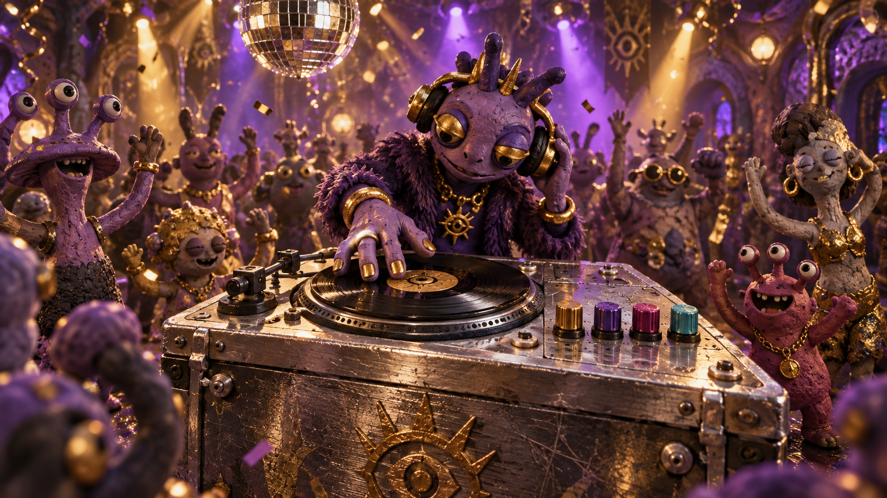
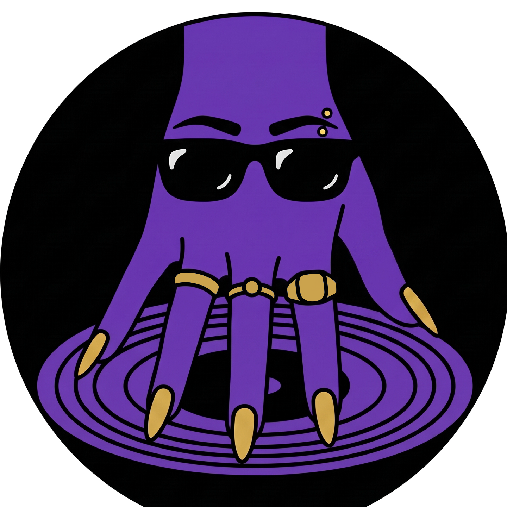
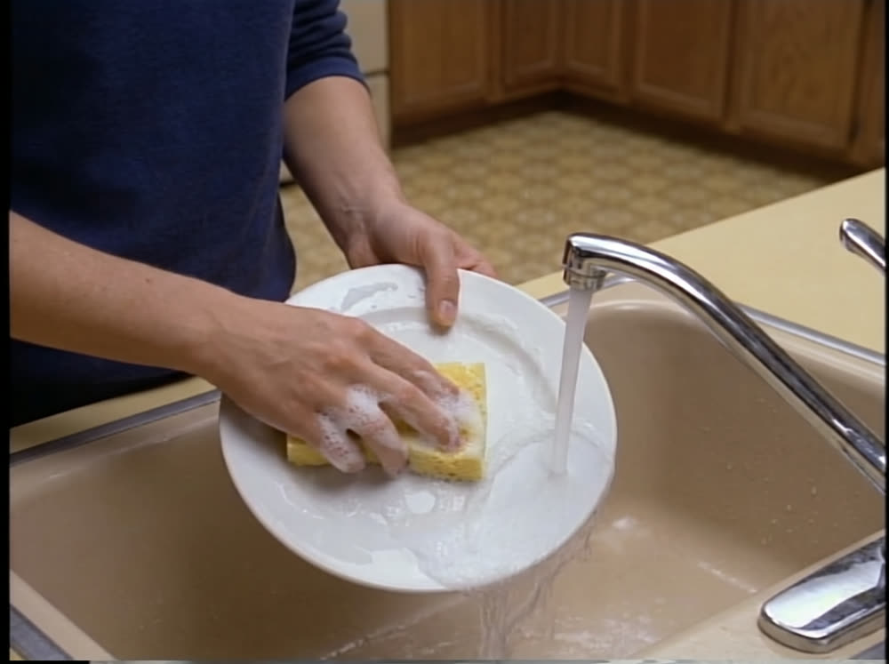
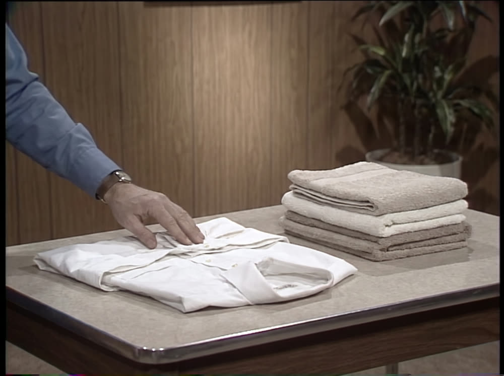
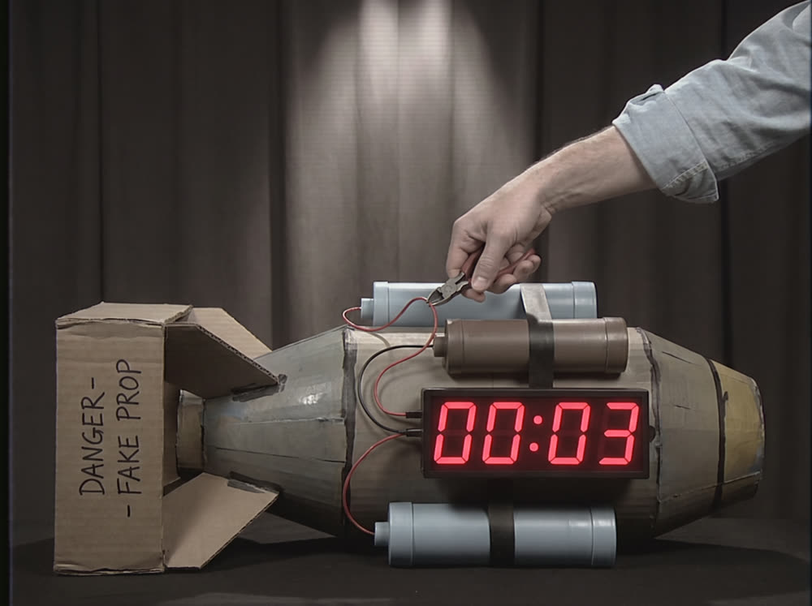

▶ Try the music deskMOM INC. PRESENTS THE HELPING HAND

The Helping Hand
It DJs. It cleans. It obeys.
Saved progress found on this device.
About 2 minutes · tap
Public edition · Free to play
AS SEEN ON MBS
One hand.
Every task.
Zero complaints.

It spins your records.
It does your dishes.
It never asks for anything.


*Fictional demonstration. Not certified for ordnance disposal.
The Helping Hand demonstration
Power the music desk, then move its four illuminated controls. Your hand advertisement arrives when every page is unlocked. Make five choices in the designer to meet Coach Armie.
Visit the full Helping Hand advertHow to play
- Do
- Follow four illuminated controls
- Finish
- Complete the four-control sequence
Restricted programming Locked
MOM is still reviewing this transmission. Horror editions unlock later.
Your music desk notes
SET THE VOICE BEFORE MOM SETS IT FOR YOU.
Optional notes for a future Coach AI. Saved only in this browser; nothing is sent. No coach reads them yet. Delete them here or in Your Files.
Partial is fine. Every question is optional, and no channel asks for the same thing twice.